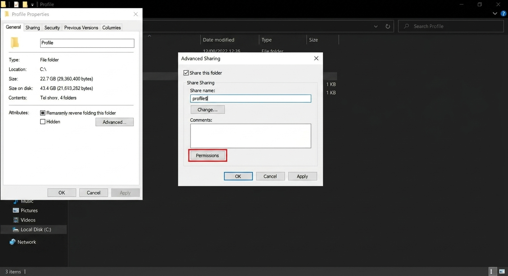
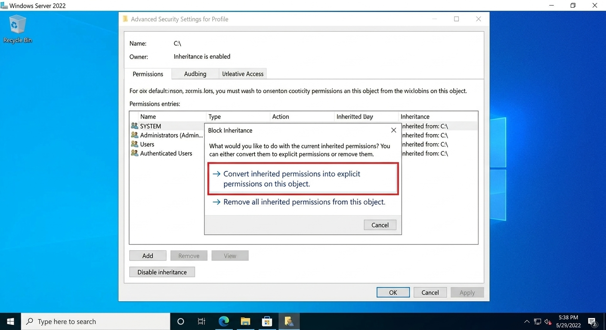
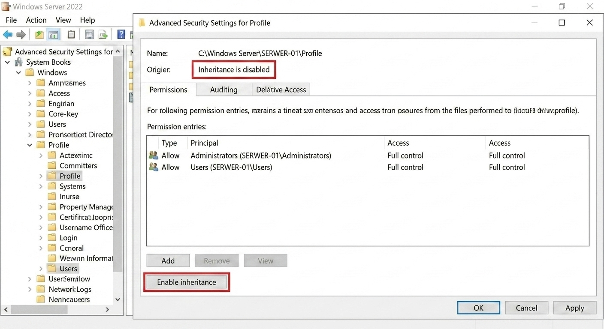
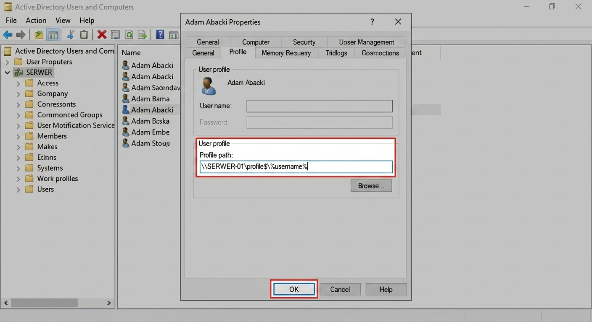

- Włącz: WIN_SERVER, WIN_11.
- Wyłącz: LINUX_SERVER.
- Wymagane wcześniej: Windows Lab 2 (użytkownik abackia w AD).
Lab 3: Tajne Akta i Wędrujące Pulpity
Czas: 60 min-
Krok 1: Utworzenie ukrytego udziału sieciowego (Share)
Na dysku C: utwórz folder
Profile. Wejdź w jego właściwości, zakładka Udostępnianie (Sharing) -> Udostępnianie zaawansowane (Advanced Sharing).Zaznacz "Udostępnij ten folder". W nazwie udziału dodaj na końcu znak dolara:
profile$. To sprawi, że folder będzie niewidoczny w otoczeniu sieciowym.
💡 Złota Rada Trenera (Uprawnienia Udziału): Kliknij przycisk Uprawnienia (Permissions) w tym oknie i upewnij się, że grupa Wszyscy (Everyone) ma Pełną kontrolę (Full Control). Prawdziwe restrykcje ustawimy za chwilę w NTFS. -
Krok 2: Konfiguracja uprawnień NTFS (Wyłączenie dziedziczenia)
To najważniejsza część zadania. Przejdź do zakładki Zabezpieczenia (Security) i kliknij Zaawansowane (Advanced).
Aby spełnić wymóg "tylko dla Administratorów i Użytkowników", musisz kliknąć Wyłącz dziedziczenie (Disable inheritance). Pojawi się kluczowe ostrzeżenie:

Wybierz pierwszą opcję: "Skonwertuj uprawnienia odziedziczone na uprawnienia jawne..." (Convert inherited permissions...).
Następnie usuń z listy zbędne grupy (np. SYSTEM, Użytkownicy uwierzytelnieni), zostawiając tylko Administratorów i Użytkowników. Upewnij się, że obie grupy mają Pełną kontrolę. Efekt końcowy:

-
Krok 3: Konfiguracja ścieżki Profilu Mobilnego
Teraz, gdy folder jest gotowy, przypiszemy go użytkownikowi. Otwórz ADUC (
dsa.msc), wejdź we właściwości użytkownika (np. Adam Abacki) i przejdź do zakładki Profil.W polu Ścieżka profilu (Profile path) wpisz ścieżkę UNC do ukrytego udziału, używając zmiennej
%username%. System automatycznie podstawi login użytkownika.Ścieżka:
\\SERWER-01\profile$\%username%
-
Krok 4: Weryfikacja i Szyfrowanie EFS (Na WIN_11)
Zaloguj się na WIN_11 jako użytkownik domenowy (np.
abackia). Pierwsze logowanie potrwa dłużej, bo tworzy się profil mobilny.Utwórz na pulpicie plik (np.
tajne.txt). Wejdź w jego Właściwości -> Zaawansowane i zaznacz "Szyfruj zawartość, aby zabezpieczyć dane" (Encrypt contents to secure data). Nazwa pliku powinna zmienić kolor na zielony.
📸 Weryfikacja Egzaminacyjna (Zrzuty ekranu)
Aby udowodnić egzaminatorowi poprawne wykonanie zadania:
-
Zrób zrzut ekranu okna Zaawansowane ustawienia zabezpieczeń folderu
Profile(to, gdzie widać "Inheritance is disabled" i tylko dwie grupy - Ekran 13b). - Na WIN_11 zrób zrzut ekranu pulpitu, na którym widać, że nazwa zaszyfrowanego pliku jest zielona.
- Wklej zrzuty do pliku tekstowego na pendrive egzaminacyjnym.